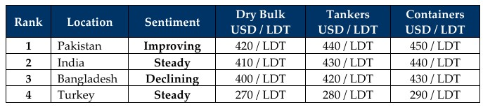

inWeekly Demolition Reports26/01/2026

Indian sub-continent ship recycling markets have been reflecting on what has been escalating on the international stage of late,with extremely turbulent effects emanating week after week from these markets — meaning it is becoming increasingly difficult to identify what price can be obtained for which type / LDT of unit and, most importantly, which buyer in which market would be willing to jump for the unit in question. Certainly, a game of where is Carmen San Diego seems to be unfolding but before we go on the hunt, let’s look at the internationals, shall we?
As we await January’s inflation figures from the various destinations, the Baltic Exchange Dry Index managed to edge up a little more on Friday, helped by the smaller segments, while capes fell 0.2% and the panamax index declined by about 0.1%. Meanwhile, crude oil finally breached the awaited USD 60/barrel barrier and wrapped up the week at USD 60.92/barrel, rising nearly 7.3% over the last month but still dangling 16.81% lower than the same time a year ago.
Meanwhile, the U.S. Dollar and local steel plate prices were on missions of their own this week as on the one hand, both India and Turkey continued to take in their share of the battering against the Dollar while on the other, local steel plate prices decided that staying horizontal for the week was better than the tiring weekly fluctuations – and a majority of them seemed to take a break in unison. As a result, pricing continues to surprise the entire industry, which itself seems to be running around playing third grade musical chairs with glee.
From the top of the price rankings board, Bangladesh has now managed to sink itself to the bottom of the sub-continent charts, with no discernible pre-election optimism radiating through the country just yet. It now seems to be Pakistan’s turn to enjoy a moment in the sun, with improved demand and even pricing (although this will always remain questionable given the ongoing volatility of neighboring competitors), reportedly even diverting vessels from the East into the hands of eager Gadani recyclers this week. Much of this renewed optimism in Gadani can be put down to a slow down / pause in the import of cheaper Iranian steel product into the local market. Yet the dejecting and ongoing scarcity of supply has left a plethora of Gadani yards, open and available for the most part, with provisional DASR certs and ready L/C limits to take in tonnage — and the hunt remains.
India remains sandwiched between the two, ready and available to take specialist tonnage (LNGs rich in non-ferrous, stainless-steel tankers, and reefers, for example), but at clearly shaky rates amid worrying depreciations of the Indian Rupee and still-fluctuating steel prices that have persisted as a terrifying theme since much of last year. Finally, Turkey at the far end remains busy (for what it’s worth) with its sudden ingestion of RoRos — but what next? More silence and Lira depreciations.
2026 is certainly off with a bang — just the wrong kind, it would seem.
For Week 04 of 2026, GMS Market Rankings / vessel indications are as below.

📄 Download PDF: Ship-recycling-market-insight-Week-04-01-23-2026-Musical_Chairs.pdfSource: GMS,Inc.https://www.gmsinc.net/gms_new/index.php/web